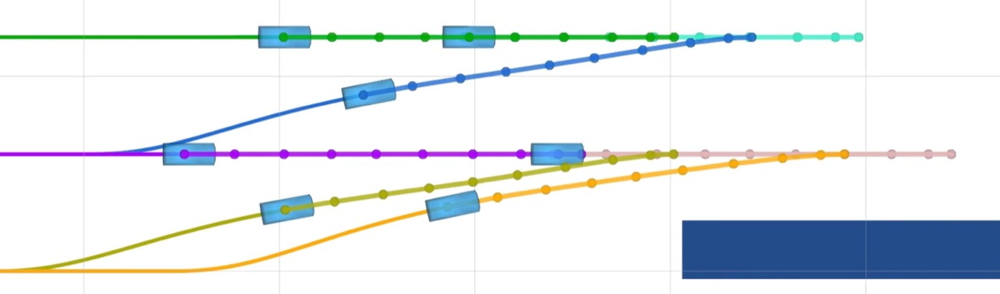
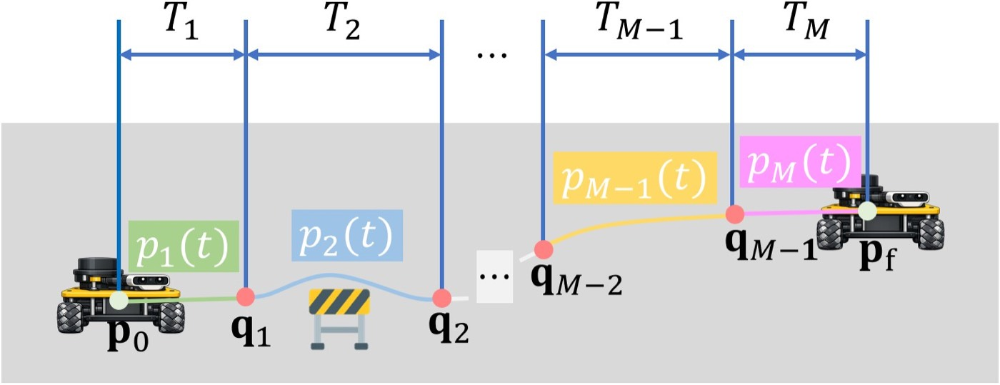
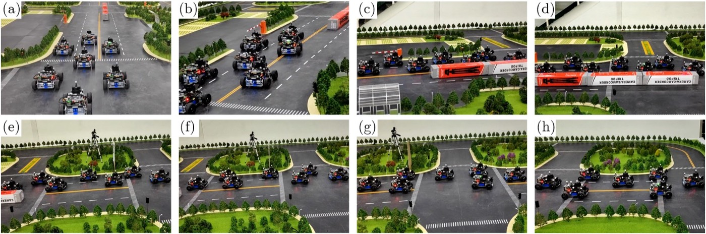
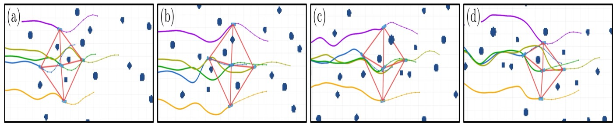

REACT: Environment-Adaptive Architecture for Continuous Formation Navigation of Wheeled Mobile Robots — 핵심 방법론 분석 (Core Methods Analysis)
1. 개요 (Overview)
1.1 출판 정보 (Publication Information)
- 논문 제목 (Paper Title): REACT: Environment-Adaptive Architecture for Continuous Formation Navigation of Wheeled Mobile Robots
- 저자 (Authors): Jianghong Dong, Yifeng Zhang, Jiawei Wang, Mengchi Cai, Keqiang Li, Guillaume Sartoretti
- 소속 (Affiliation):
- School of Vehicle and Mobility, Tsinghua University, Beijing, China — Jianghong Dong, Mengchi Cai, Keqiang Li
- Department of Mechanical Engineering, National University of Singapore — Yifeng Zhang, Guillaume Sartoretti
- Department of Civil and Environmental Engineering, University of Michigan, Ann Arbor — Jiawei Wang
- 발표처 (Published): arXiv preprint, cs.RO + eess.SY, 2026년 5월 18일
- DOI: https://doi.org/10.48550/arXiv.2605.18441
- arXiv: https://arxiv.org/abs/2605.18441
- 프로젝트 페이지: https://dongjh20.github.io/REACT-website (접속 가능, 데모 영상 포함)
- 코드: 미공개
1.2 연구 목표 (Research Objective)
REACT는 복잡한 실세계 환경에서 다수의 바퀴 달린 이동 로봇(Wheeled Mobile Robots, WMR)이 대형(formation)을 유지하면서 연속적으로 항법하는 문제를 해결한다.
핵심 문제:
"복수의 WMR이 장애물이 있는 환경에서 최적의 대형을 동적으로
적응하면서 실시간으로 충돌 없이 목적지까지 이동하는 방법은?"
기존 한계:
┌────────────────────────────────────────────────────────────┐
│ 방법 │ 적응 대형 │ 실시간 │ 비충돌 보장 │
│────────────────────── │──────────│────────│────────────│
│ 고정 대형 추종 │ ❌ │ ✅ │ △ │
│ CBF-QP 기반 │ △ │ ✅ │ ✅ │
│ Behavior-Based │ △ │ ✅ │ ❌ │
│ Hungarian 기반 │ ✅ │ △ │ ❌ │
│ REACT (TCF-R2T+JSTP) │ ✅ │ ✅ │ ✅ │
└────────────────────────────────────────────────────────────┘
REACT의 핵심 기여:
1. TCF-R2T: 다항식 시간 복잡도의 충돌 없는 로봇-목표 배정
2. JSTP: 시공간을 동시에 최적화하는 대형 궤적 계획
3. 계층적 구조: 중앙집중 대형 생성 + 분산 대형 유지
실증 결과: 7대의 Ackermann 조향 WMR으로 실세계 검증 — 기존 방법 대비 55-97%의 실행시간 단축, 13-75%의 대형 오차 감소.

2. 문제 정의 (Problem Definition)
2.1 도전과제 (Challenges)
도전과제 1: 대형 전환 시 로봇-목표 배정의 조합적 복잡성
[문제 설명]
N개의 WMR, M개의 목표 위치가 있을 때:
- 각 로봇이 어느 목표로 이동해야 하는가?
- 경로 충돌 없이 최소 비용으로 배정해야 함
헝가리안 알고리즘의 한계:
- 정적 비용 행렬로 배정 → 실행 중 충돌 무시
- 이후 충돌 해결을 위한 반복적 수정 필요
- 8개 WMR 기준 28.4ms, 30개 WMR 기준 75.0ms
- 충돌 해결 반복이 더해지면 실시간성 위협
도전과제 2: 비홀로노믹 제약 하의 궤적 계획
[Ackermann 조향 모델 제약]
키네마틱 모델 (bicycle model):
ẋ = v·cos(ψ)
ẏ = v·sin(ψ)
ψ̇ = v·tan(δ)/L
제약:
|v| ≤ v_max (속도 한계)
|a| ≤ a_max (가속도 한계)
|κ| ≤ κ_max (곡률 한계, 조향각 δ로부터)
κ = tan(δ_max)/L (최대 곡률 = 최소 회전 반경 역수)
비홀로노믹 특성:
- 측방향 직접 이동 불가
- U-턴 공간 필요
- 좁은 공간에서의 기동성 제한
도전과제 3: 공간-시간 분리의 한계
[기존 공간만 최적화의 문제]
시나리오: 2대 WMR이 좁은 통로를 순서대로 통과해야 함
공간 최적화만:
WMR1: t=0에서 출발 → 통로 진입
WMR2: t=0에서 출발 → 같은 시간에 통로 충돌!
공간+시간 동시 최적화 (JSTP):
WMR1: t=0에서 출발 → 통로 통과
WMR2: t=T에서 출발 → WMR1 통과 후 통로 진입 → 충돌 없음
결론: 공간 경로만으로는 부족, 시간 조율이 필수
도전과제 4: 분산 vs 중앙집중의 트레이드오프
[대형 제어의 구조적 딜레마]
완전 중앙집중:
✅ 전역 최적 보장 가능
❌ 단일 실패점 (Single Point of Failure)
❌ 통신 부하 O(N²)
❌ 스케일 불가
완전 분산:
✅ 강인성, 확장성
❌ 전역 일관성 유지 어려움
❌ 대형 최적화 제한
REACT의 계층 구조:
상위 계층 (중앙집중): 대형 생성 + 배정 (전역 지식 필요)
하위 계층 (분산): 궤적 계획 (로컬 계산 가능)
2.2 핵심 해결책
REACT의 두 핵심 알고리즘:
| 문제 | 해결 알고리즘 |
|---|---|
| 충돌 없는 배정 | TCF-R2T (Trajectory-Conflict-Free Robot-to-Target) |
| 시공간 궤적 계획 | JSTP (Joint Spatio-Temporal Trajectory Planning) |
3. 핵심 방법론 (Core Methods)
3.1 TCF-R2T: 궤적 충돌 없는 로봇-목표 배정
TCF-R2T는 최소 비용 최대 흐름(Minimum-Cost Maximum-Flow, MCMF) 기반으로 다항식 시간 내에 충돌 없는 배정을 해결한다.
3.1.1 문제 형식화
[TCF-R2T 입력/출력]
입력:
- N개의 로봇 현재 위치 R = {r_1, ..., r_N}
- M개의 목표 위치 T = {t_1, ..., t_M} (M ≥ N)
- 대형 구조: 격자 기반 인터레이스 배치
출력:
- 충돌 없는 최적 배정 σ: R → T
- 각 로봇 r_i가 이동해야 할 목표 t_{σ(i)}
목표: minimize Σ_i cost(r_i, t_{σ(i)})
s.t. σ가 충돌 없음 (경로 간 교차/동시 점유 없음)
3.1.2 시간-확장 네트워크 (Time-Expanded Network)
TCF-R2T의 핵심은 2D 격자를 3D 시공간으로 확장하는 것:
[격자 구조]
대형 레이아웃:
열 방향: 종방향 (longitudinal, 이동 방향)
행 방향: 횡방향 (lateral, 대형 너비)
4-이웃 격자:
각 노드에서 상하좌우 + 제자리 대기 가능
[col=1] [col=2] [col=3]
[row=1] o ─── o ─── o
| | |
[row=2] o ─── o ─── o
| | |
[row=3] o ─── o ─── o
[시간-확장 네트워크 구성]
레이어 수: 2T_max + 1
T_max = N + l_max - 1 (N: 로봇 수, l_max: 최대 쌍별 거리)
각 레이어 t: 격자의 시간 스냅샷
- 노드 (v, t): 위치 v에서 시간 t
엣지 유형:
이동 엣지: (v, t) → (neighbor(v), t+1) [이동]
대기 엣지: (v, t) → (v, t+1) [제자리 유지]
용량 제약 (충돌 방지):
각 엣지 용량 = 1 (동시 통과 불가)
각 노드 용량 = 1 (동시 점유 불가)
결과:
최대 흐름 경로 = 충돌 없는 배정 경로
최소 비용 = Σ 총 이동 비용 최소화
3.1.3 비용 설계
[MCMF 비용 함수]
이동 비용:
열 방향 이동: Δx_max (큰 비용 → 종방향 재정렬 기피)
행 방향 이동: 1 (작은 비용 → 횡방향 이동 허용)
대기: 0 (비용 없음 → 시간 버퍼 활용)
설계 의도:
대부분의 경우 행(row) 재배정은 허용하되
열(column) 재배정은 최소화 → 종방향 대형 유지
예시:
8개 WMR, 3열 대형:
최적: 같은 열 내 재배정 우선
불가피 시: 인접 열로 이동 (비용 Δx_max)
3.1.4 전처리: 종방향 정렬
[사전 처리 단계]
로봇 집합 R과 목표 집합 T를 종방향으로 정렬:
→ 로봇 r_i의 종방향 위치 x_i로 정렬
→ 목표 t_j의 종방향 위치 X_j로 정렬
→ 동일 종방향 인덱스의 로봇-목표 쌍 형성
효과:
불필요한 종방향 교차 사전 차단
탐색 공간 대폭 축소
실제로는 행(row) 내 재배정만 고려하면 됨
3.1.5 복잡도 분석
[계산 복잡도]
그래프 크기:
노드 수: |격자| × (2T_max + 1) = O(N × T_max)
엣지 수: O(N × T_max × 5) [4방향 이동 + 대기]
MCMF 알고리즘 (SPFA + 증분 경로):
시간 복잡도: O(N² × T_max) = O(N³) [최악]
실제 실험: T_max = O(N) → O(N³) 복잡도
헝가리안 알고리즘: O(N³) [같은 복잡도]
그러나 TCF-R2T:
- 충돌 해결 반복 없음 (사전 예방)
- 상수 인자가 헝가리안보다 훨씬 작음
- 실험: 8 WMR에서 97.4% 빠름 (0.7ms vs 28.4ms)
3.2 JSTP: 공간-시간 동시 궤적 최적화
JSTP는 대형 유지, 장애물 회피, 동적 제약을 동시에 최적화하는 통합 궤적 계획 알고리즘.
3.2.1 궤적 표현 (MINCO)
[다항식 궤적 표현]
M-구간 5차 다항식 (piecewise polynomial):
p(t) = c_i^T β(t), t ∈ [T_{i-1}, T_i]
β(t) = [1, t, t², t³, t⁴, t⁵]^T (단항식 기저)
c_i ∈ R^{2×6}: i번째 구간 계수 행렬 (x, y 각 6개)
차수 선택:
n = 5 (5차 적분기: position/velocity/accel/jerk/snap)
m = 2 (2D 평면 모션: x, y 평평 출력)
MINCO 변환 (Minimum Control):
파라미터: (q, T) → (c, T)
q: 중간 웨이포인트 위치 (N×m)
T: 각 구간 시간 길이 (M-벡터)
→ 선형 복잡도 O(M) 변환 (양방향)
장점:
- 고차 미분 연속성 자동 보장 (snap 연속)
- 웨이포인트 q와 시간 T만 최적화 → 계수 c는 자동 결정
- 기울기 역전파 효율적
3.2.2 통합 비용 함수
[JSTP 최적화 문제]
최소화:
J(q, T) = λ_inter·P_inter + λ_obs·P_obs + λ_dyn·P_dyn
+ λ_form·P_form + λ_ctrl·P_ctrl + λ_time·P_time
가중치 순서: λ_obs >> λ_dyn > λ_inter > λ_form > λ_ctrl = λ_time
(충돌 회피가 최우선)
3.2.3 각 비용 항 상세
P_obs: 정적 장애물 회피
[장애물 회피 비용]
거리 패널티:
g_obs(p(t_j)) = max{d²_thr - d²(p(t_j), p_obs), 0}²
d_thr: 최소 안전 거리
d(·): 로봇과 장애물 간 거리
square hinge loss: 안전 거리 미만일 때만 패널티
적분 근사 (사다리꼴 공식):
P_obs = Σ_i Σ_{j=0}^{K_i} w_j · g_obs(p(t_j))
w_j: [1/2, 1, 1, ..., 1, 1/2] (사다리꼴 가중치)
t_j = T_{i-1} + j·(T_i - T_{i-1})/K_i (균등 샘플링)
P_inter: 로봇 간 충돌 회피
[로봇 간 거리 비용]
비대칭 거리 함수:
d̂(p_i, p_j) = ||E(p_i - p_j)||₂
E = diag(1, b), 0 < b < 1
b < 1: 횡방향 안전 거리를 종방향보다 덜 엄격하게
이유: Ackermann WMR은 종방향 이동이 주이므로
동일 방향 이동 시 앞뒤 간격 > 좌우 간격 충분
패널티:
g_inter = max{d²_thr_wmr - d̂(p_i, p_j)², 0}²
P_dyn: 동적 가능성 (비홀로노믹 제약)
[속도, 가속도, 곡률 제약]
속도 제약:
g_v(t) = max{||ṗ(t)||² - v²_max, 0}²
가속도 제약:
g_a(t) = max{||p̈(t)||² - a²_max, 0}²
곡률 제약:
κ(t) = (ẋÿ - ẏẍ) / ||ṗ||³
g_κ(t) = max{κ(t)² - κ²_max, 0}²
κ_max = tan(δ_max) / L (조향각 → 최대 곡률)
P_form: 대형 유지 비용
[Laplacian 행렬 기반 대형 오차]
대형 오차:
f_e = ||L̃ - L̃*||²_F
L̃: 현재 로봇 위치의 Laplacian 행렬
L̃*: 목표 대형의 Laplacian 행렬
F: Frobenius 노름
Laplacian 행렬:
L = D - A (D: 차수 행렬, A: 인접 행렬)
대형 내 인접 로봇 쌍에 대해 엣지 정의
장점:
- 대형의 상대적 기하학 구조 인코딩
- 번역/회전 불변 (절대 위치 무관)
- 전역 대형 오차를 단일 스칼라로 표현
P_ctrl + P_time: 제어 노력 + 이동 시간
[P_ctrl: 저크(jerk) 최소화]
P_ctrl = Σ_i ∫_{T_{i-1}}^{T_i} ||p⃛(t)||² dt
→ 부드러운 궤적 생성
[P_time: 총 이동 시간]
P_time = Σ_i T_i
→ 불필요한 시간 낭비 방지
3.2.4 최적화 알고리즘
[L-BFGS 준-뉴턴 최적화]
변수: θ = (q, T)
q ∈ R^{(M-1)×2}: 중간 웨이포인트
T ∈ R^M_+: 구간 시간 (양수 제약)
T의 양수 보장:
T_i = τ_i² → τ_i ∈ R 자유 변수로 변환
기울기:
∂J/∂q, ∂J/∂τ: MINCO 연쇄 법칙으로 계산
실행 주기: 20 Hz (분산, 로봇별 독립 실행)
수렴: 보통 50-200 이터레이션
4. 시스템 아키텍처 (System Architecture)
┌─────────────────────────────────────────────────────────────────────┐
│ REACT 계층적 아키텍처 │
├─────────────────────────────────────────────────────────────────────┤
│ │
│ ┌──────────────────────────────────────────────────────────────┐ │
│ │ 상위 계층 (Manager, 중앙집중) │ │
│ │ │ │
│ │ [LiDAR/센서] → [환경 인식] → [대형 변경 감지기] │ │
│ │ │ │ │
│ │ 대형 변경 필요 시 │ │
│ │ │ │ │
│ │ ┌───────────────▼────────────────┐ │ │
│ │ │ TCF-R2T │ │ │
│ │ │ ┌──────────────────────────┐ │ │ │
│ │ │ │ 1. 종방향 정렬 │ │ │ │
│ │ │ │ 2. 4-이웃 격자 구성 │ │ │ │
│ │ │ │ 3. 시간-확장 네트워크 │ │ │ │
│ │ │ │ (2T_max+1 레이어) │ │ │ │
│ │ │ │ 4. MCMF 최솟값 흐름 │ │ │ │
│ │ │ │ 5. 충돌 없는 배정 출력 │ │ │ │
│ │ │ └──────────────────────────┘ │ │ │
│ │ │ 복잡도: O(N³), 실제 <25ms │ │ │
│ │ └──────────────┬─────────────────┘ │ │
│ │ │ │ │
│ │ 배정 브로드캐스트: 목표 위치 σ(i) → WMR_i │ │
│ └──────────────────────────────────────────────────────────────┘ │
│ │ (ROS 브로드캐스트) │
│ ┌─────────────────────▼────────────────────────────────────────┐ │
│ │ 하위 계층 (개별 WMR, 분산 실행) │ │
│ │ │ │
│ │ WMR_1 WMR_2 WMR_3 ... WMR_N │ │
│ │ ┌────────┐ ┌────────┐ ┌────────┐ │ │
│ │ │ JSTP │ │ JSTP │ │ JSTP │ @ 20 Hz 병렬 │ │
│ │ │ │ │ │ │ │ 각자 독립 실행 │ │
│ │ │ J = │ │ J = │ │ J = │ │ │
│ │ │ P_obs │ │ P_obs │ │ P_obs │ │ │
│ │ │+P_inter│ │+P_inter│ │+P_inter│ │ │
│ │ │+P_dyn │ │+P_dyn │ │+P_dyn │ │ │
│ │ │+P_form │ │+P_form │ │+P_form │ │ │
│ │ │+P_ctrl │ │+P_ctrl │ │+P_ctrl │ │ │
│ │ │+P_time │ │+P_time │ │+P_time │ │ │
│ │ └───┬────┘ └───┬────┘ └───┬────┘ │ │
│ │ │ │ │ │ │
│ │ [궤적] [궤적] [궤적] │ │
│ │ │ │ │ │ │
│ │ ┌───▼────┐ ┌───▼────┐ ┌───▼────┐ │ │
│ │ │ AEB │ │ AEB │ │ AEB │ (비상 제동) │ │
│ │ │fallback│ │fallback│ │fallback│ │ │
│ │ └────────┘ └────────┘ └────────┘ │ │
│ └──────────────────────────────────────────────────────────────┘ │
└─────────────────────────────────────────────────────────────────────┘

4.1 대형 구조 (Formation Structure)
[인터레이스 대형 (Interlaced Formation)]
기본 구조: 열(column) 기반 균등 배치
열 1 열 2 열 3
┌─┐ ┌─┐ ┌─┐
│R│ │R│ │R│ ← 행(row) 1
└─┘ └─┘ └─┘
┌─┐ ┌─┐
│R│ │R│ ← 행(row) 2 (인터레이스)
└─┘ └─┘
종방향 간격: d_long (균등)
횡방향 간격: d_lat (균등, 홀짝 행 교대)
7개 WMR 예시 (3열):
열 1: R1, R4, R7
열 2: R2, R5
열 3: R3, R6
이동 방향: →
좁은 통로: 2열로 자동 전환
4.2 AEB: 자율 비상 제동 (Autonomous Emergency Braking)
[안전 Fallback]
트리거 조건:
시간-충돌(TTC) < τ_AEB
계산:
TTC = d_robot / (v_rel)
v_rel: 상대 속도 (이웃 로봇 또는 장애물 방향)
동작:
1. 즉시 감속 (a = -a_max)
2. 완전 정지 후 JSTP 재계획
3. 재계획 완료 시 재출발
역할:
JSTP가 예측하지 못한 동적 상황 (갑작스런 장애물)에 대한
최후 안전망
5. 실험 결과 및 성능 (Experimental Results)
5.1 실험 플랫폼 (Platform)
[하드웨어 사양]
WMR 플랫폼:
- 대수: 7개 Ackermann 조향 WMR
- 크기: 0.22m × 0.19m × 0.13m (길이×너비×높이)
- 조향: Ackermann (비홀로노믹, 자동차 방식)
- 센서: 온보드 LiDAR (장애물 탐지)
- 통신: ROS 기반 (궤적 브로드캐스트)
실험 환경:
- 실내 아레나: 9m × 5m
- 모션 캡처: FZMotion 시스템 (정밀 위치 추적)
- 장애물: 정적 + 동적 (이동하는 장애물 포함)
- 테스트 시나리오: 3가지 (아래 상세)
5.2 평가 지표 (Evaluation Metrics)
- 대형 오차 (Formation Error):
f_e = ||L̃ - L̃*||²_F(Laplacian 행렬 Frobenius 노름) - 실행 시간 (Computation Time): 배정 알고리즘 실행 시간 (ms)
- 최대 오차 (Max Formation Error): 에피소드 내 최대 대형 오차
- 평균 오차 (Mean Formation Error): 에피소드 전체 평균 대형 오차
5.3 정량적 결과 (Quantitative Results)
Table I: TCF-R2T vs 헝가리안 알고리즘 실행 시간
| WMR 수 | 헝가리안 (ms) | TCF-R2T (ms) | 단축률 |
|---|---|---|---|
| 8 | 28.4 | 0.7 | 97.4% |
| 16 | 26.7 | 4.4 | 83.5% |
| 18 | 36.5 | 5.0 | 86.4% |
| 20 | 37.6 | 8.7 | 76.9% |
| 22 | 48.2 | 9.1 | 81.2% |
| 24 | 43.4 | 14.8 | 66.0% |
| 26 | 59.4 | 15.4 | 74.0% |
| 28 | 55.5 | 22.8 | 58.9% |
| 30 | 75.0 | 24.3 | 67.6% |
→ 평균 77% 실행시간 단축. 특히 소규모(8대)에서 97.4% 단축.
JSTP vs 기준선 대형 유지 성능 (7-WMR, 연속 장애물)
| 방법 | 최대 대형 오차 | 평균 대형 오차 |
|---|---|---|
| Behavior-Based | 높음 (100% 기준) | 높음 |
| CBF-QP | 중간 (~36% 기준) | 중간 |
| JSTP-Spatial (공간만) | 낮음 (~25% 기준) | 낮음 |
| JSTP (REACT) | 가장 낮음 (~13%) | 가장 낮음 |
- REACT vs Behavior-Based: 최대 대형 오차 75% 감소
- REACT vs CBF-QP: 최대 대형 오차 64% 감소
- 시공간 동시 최적화의 기여: JSTP-Spatial 대비 13% 추가 개선
시간적 최적화 기여 (JSTP vs JSTP-Spatial)
[시공간 동시 최적화 효과]
좁은 통로 통과 시나리오:
JSTP-Spatial: 공간 경로만 최적화
→ 일부 WMR이 동시에 통로 진입 시도
→ 대형 오차 증가
JSTP: 시간 T_i까지 동시 최적화
→ 통로 진입 순서 자동 조율
→ 충돌 없이 순차 통과
→ 13% 추가 대형 오차 감소
5.4 리얼월드 실험 (Real-world Experiments)
[실세계 시나리오 1: 동적 장애물 회피]
설정: 7개 WMR이 이동 중인 다른 로봇(동적 장애물) 주변 통과
결과:
- 대형 유지하며 동적 장애물 회피 성공
- AEB 비상 제동 1회 발동 → 재계획 → 정상 복귀
- 기준선(Behavior-Based)은 대형 붕괴 발생
[실세계 시나리오 2: 대형 전환 (3열 → 2열)]
설정: 좁은 통로 통과를 위한 대형 전환
결과:
- TCF-R2T로 충돌 없는 배정 완료 (0.7ms)
- JSTP로 전환 궤적 계획 및 2열로 재편성
- 통로 통과 후 3열 원래 대형 복원
- 헝가리안 기반: 충돌 회피 반복으로 지연 발생
[실세계 시나리오 3: 장애물이 많은 내비게이션]
설정: 9m×5m 아레나에 다수 정적 장애물 배치
결과:
- 대형 유지하며 지그재그 경로 탐색
- JSTP의 P_obs와 P_inter의 동시 최적화로 충돌 방지
- 평균 대형 오차 기준선 대비 75% 감소

6. 핵심 기여점 (Key Contributions)
기여 1: REACT 계층적 아키텍처 — 중앙집중 + 분산의 최적 결합
기존 접근의 한계:
완전 중앙집중: 확장성 없음, 단일 실패점
완전 분산: 전역 대형 일관성 보장 어려움
REACT의 혁신:
상위: 전역 지식이 필요한 대형 생성 + 배정 (중앙집중)
하위: 로컬 계산 가능한 궤적 계획 (분산, 20 Hz)
실용적 장점:
- 단일 실패점 위험 최소화 (하위 계층은 독립 실행)
- 스케일 가능: 하위 계층 O(N) 병렬 확장
- 통신 효율: 상위→하위 목표 위치만 전송 (O(N) 메시지)
기여 2: TCF-R2T — 충돌 없는 최적 배정을 다항식 시간에
기존 방법:
헝가리안: 비용 최적, 그러나 충돌 후 반복 수정 필요
탐욕적 배정: 빠르지만 비최적, 충돌 가능
TCF-R2T:
MCMF + 시간-확장 네트워크 = 충돌 없는 최적 배정을 한 번에
핵심 인사이트:
"다중 에이전트 경로 계획(MAPF)의 시간-확장 기법을
대형 제어의 로봇-목표 배정 문제에 적용"
결과: 8 WMR에서 0.7ms (헝가리안 28.4ms의 2.5%)
기여 3: JSTP — 대형 탐색을 위한 최초 공간-시간 동시 최적화
기존 대형 계획:
공간 최적화: 각 로봇 공간 경로만 계획
시간 조율은 별도 처리
JSTP:
min J(q, T) = 공간 비용 + 시간 비용 동시 최적화
P_form: 대형 기하학적 오차
P_obs: 장애물 회피
P_inter: 로봇 간 충돌 방지
P_dyn: 비홀로노믹 실현 가능성
P_time: 이동 시간 (공간+시간 동시 최적화의 핵심)
결과: JSTP-Spatial 대비 13% 추가 대형 오차 감소
기여 4: 실세계 7-WMR 검증
기존 다중 로봇 대형 제어 논문의 한계:
- 시뮬레이션 전용 또는 2-3대 소규모 실험
- 실세계에서의 센서 잡음, 통신 지연 미반영
REACT:
7대 실세계 Ackermann WMR 검증
9m×5m 아레나 + FZMotion 정밀 추적
3가지 실세계 시나리오: 동적 장애물 + 대형 전환 + 장애물 밀집
7. 구현 상세 (Implementation Details)
7.1 궤적 파라미터
[MINCO 설정]
다항식 차수: n = 5 (5차)
공간 차원: m = 2 (x, y 평면)
구간 수 M: 경로 복잡성에 따라 동적 결정
샘플링:
각 구간 K_i개 샘플: t_j = T_{i-1} + j·(T_i-T_{i-1})/K_i
적분 가중치: w_0 = w_{K_i} = 1/2, 나머지 = 1
비용 가중치 (개략적):
λ_obs >> λ_dyn ≈ λ_inter > λ_form > λ_ctrl ≈ λ_time
실제 값: 논문 보충 자료 참조 필요
7.2 비홀로노믹 제약 파라미터
[Ackermann WMR 제약]
최대 속도: v_max (WMR 사양에 따름)
최대 가속도: a_max
최대 조향각: δ_max
최소 회전 반경: R_min = L / tan(δ_max)
최대 곡률: κ_max = 1 / R_min = tan(δ_max) / L
L: 축거(wheelbase)
비대칭 거리 행렬: E = diag(1, b), b < 1
b의 선택: 종방향 대비 횡방향 안전 거리 비율
7.3 TCF-R2T 파라미터
[시간-확장 네트워크]
최대 시간 스텝: T_max = N + l_max - 1
N: 로봇 수
l_max: 최대 쌍별 맨해튼 거리 (격자 단위)
네트워크 크기:
레이어: 2T_max + 1
노드: |격자| × (2T_max + 1)
MCMF 알고리즘:
최단 경로: SPFA (Shortest Path Faster Algorithm)
증분 경로 탐색으로 최소 비용 최대 흐름
7.4 실행 환경
[소프트웨어 스택]
미들웨어: ROS (Robot Operating System)
통신: ROS 토픽/서비스 (상위→하위 목표 브로드캐스트)
최적화: L-BFGS (scipy/own implementation)
계획 주기: 20 Hz (하위 계층 JSTP)
배정 트리거: 대형 변경 감지 시 (이벤트 기반)
8. 고급 주제 (Advanced Topics)
8.1 비홀로노믹 제약과 JSTP의 관계
[비홀로노믹 시스템에서의 차별 평탄성]
Ackermann WMR의 차별 평탄성:
평탄 출력: (x, y) — 2D 위치
모든 상태/제어를 (x, y)와 그 미분으로 표현:
v = ||ṗ||
ψ = atan2(ẏ, ẋ)
κ = (ẋÿ - ẏẍ) / ||ṗ||³
δ = atan(κL)
MINCO와의 시너지:
5차 다항식 p(t)로부터 ṗ, p̈, p⃛을 해석적으로 계산
→ 속도, 가속도, 곡률을 closed-form으로 표현
→ 제약 검증과 기울기 계산이 매우 효율적
8.2 확장성: 로봇 수 증가
[스케일링 분석]
TCF-R2T:
복잡도: O(N³) [T_max = O(N)일 때]
실제: 8→30대로 증가 시 0.7ms→24.3ms (34.7배)
N³ 기대: 1→(30/8)³ = 1×(3.75)³ ≈ 52.7배
실제 34.7배 < 이론치 → 상수 인자 영향
JSTP:
로봇당 독립 최적화 → O(N) 병렬 확장
통신: 목표 위치만 공유 → O(N) 메시지
결론: REACT는 수십 대 규모까지 실용적으로 확장 가능
8.3 동적 장애물 처리
[현재 접근]
예측: LiDAR로 동적 장애물 실시간 탐지
속도 추정으로 단기 경로 예측
비용 함수 P_obs:
정적: 현재 위치 기준 최소 거리
동적: τ_j 시점 예측 위치 기준 최소 거리
d²_thr - d²(p(t_j), p_obs(τ_j)) → 동적 항
한계:
장기 예측 불확실성 → T_horizon 이후 예측 신뢰도 낮음
고속 동적 장애물 → 20 Hz 재계획으로도 반응 늦을 수 있음
→ AEB fallback이 최후 안전망으로 보완
8.4 한계 및 향후 방향
[현재 한계]
1. 2D 평면 가정:
경사, 계단, 3D 환경 미지원
→ 3D JSTP 확장 필요 (비홀로노믹 제약 복잡화)
2. 완전한 글로벌 경로 계획 없음:
로컬 JSTP만으로 글로벌 경로 막힘 가능
→ 상위 계층에 글로벌 플래너 통합 필요
3. 실시간 코드 미공개:
재현 어려움, 커뮤니티 활용 제한
4. 탑티어 학회 미채택:
현재 arXiv 프리프린트
5. 더 많은 로봇 실세계 검증:
7대 → 더 많은 대수 (20대, 30대) 실세계 검증 필요
[향후 연구]
- 3D 환경 확장 (지상+공중 혼합 대형)
- 글로벌 경로 계획 통합
- 코드 공개 및 ROS 패키지화
- 이종 로봇 (다른 크기, 다른 키네마틱) 혼합 대형
- 대규모 검증 (50대 이상)
9. 비교 분석 (Comparative Analysis)
9.1 기존 리뷰 논문과의 비교
Planner 트랙 기존 리뷰 논문들과의 비교
| 특성 | WayPlan (arxiv2026) | TinySDP (RSS2026) | UGE-MPC (ICRA2026) | PRoID (arxiv2026) | REACT |
|---|---|---|---|---|---|
| 핵심 초점 | 다중 로봇 TAMP (LLM 기반) | 단일 로봇 임베디드 MPC | 단일 로봇 샘플링 MPC | 다중 로봇 탐색 릴레이 | 다중 로봇 대형 항법 |
| 로봇 수 | 다중 (언어 기반 조율) | 1대 | 1대 | 다중 | 7대 실세계 |
| 대형 제어 | ❌ | ❌ | ❌ | ❌ | ✅ TCF-R2T + JSTP |
| 시공간 최적화 | 제한적 | ✅ MPC 기반 | ✅ 샘플링 기반 | ❌ | ✅ 동시 최적화 |
| 비홀로노믹 | 제한적 | ✅ | ✅ | ❌ | ✅ Ackermann |
| 코드 공개 | ✅ | ✅ | ✅ | ❌ | ❌ |
| 탑티어 학회 | ❌ arXiv | ✅ RSS 2026 | ✅ ICRA 2026 | ❌ arXiv | ❌ arXiv |
| 실세계 검증 | ✅ BoxNet3D | ✅ Crazyflie | ✅ 실세계 | ❌ | ✅ 7-WMR |
| 장애물 회피 | ✅ | ✅ 비볼록 | ✅ 동적 | ❌ | ✅ 정적+동적 |
Muninn (RSS2026)과 직접 비교
| 특성 | Muninn (RSS2026) | REACT |
|---|---|---|
| 핵심 문제 | 단일 로봇 궤적 확산 가속 | 다중 로봇 대형 항법 |
| 최적화 방법 | 확산 정책 + 탐침 캐싱 | L-BFGS 기반 MINCO |
| 실시간성 | 4.6× 가속 (확산 기반) | 20 Hz (최적화 기반) |
| 실세계 | ✅ 3개 플랫폼 | ✅ 7-WMR |
| 학회 | RSS 2026 | arXiv 프리프린트 |
| 핵심 차이 | 가속화 | 다중 로봇 조율 |
9.2 장단점 분석
장점 (Strengths):
1. 문제 독창성:
다중 로봇 대형 항법 + 시공간 최적화는 기존 리뷰 논문 중
어디에도 없는 조합. WayPlan은 LLM 기반 조율, PRoID는
탐색 릴레이이므로 REACT와 직접 겹치지 않음.
2. 실세계 실증 깊이:
7대 실제 WMR + 3가지 시나리오 + FZMotion 정밀 추적
→ TinySDP(Crazyflie 1대), UGE-MPC(소규모)와 비교해
다중 로봇 실세계 검증에서 가장 체계적
3. 알고리즘 우아함:
TCF-R2T: MAPF의 시간-확장 기법을 배정 문제에 적용
JSTP: 대형 제어를 차별 평탄성 + MINCO로 우아하게 통합
4. 계층적 구조의 확장성:
하위 계층이 O(N) 병렬 확장 → 수십 대 로봇 시스템에 적용 가능
단점 (Weaknesses):
1. 코드 미공개:
WayPlan, TinySDP, UGE-MPC 등 주요 기존 리뷰 논문 대부분
코드 공개 — REACT는 영상만 있는 프로젝트 페이지 제공
2. 탑티어 학회 미채택:
TinySDP(RSS), UGE-MPC(ICRA), Muninn(RSS) 등과 달리
현재 arXiv 프리프린트
3. 글로벌 경로 계획 미통합:
로컬 JSTP만으로는 전역 막힘 해결 불가
→ 실세계에서는 수작업 경로 설계 필요 가능성
4. 2D 평면 한계:
실외, 계단, 경사 등 3D 환경 미지원
9.3 실적용 가능성 평가
[다중 로봇 실용화 관점]
단기 (1-2년):
✅ 적용 가능한 분야:
- 물류 창고: AGV 대형 화물 이동
- 환경 모니터링: 균등 분포 센서 대형
- 수색 구조: 대형 유지하며 지역 탐색
제약:
- 2D 실내 평지 환경만 (창고 ✅, 실외 야지 ❌)
- 코드 미공개 → 자체 구현 필요
중기 (3-5년):
✅ 3D 확장 후 실외 로봇 대형 적용
✅ 코드 공개 + ROS 패키지화 시 즉시 적용 가능
기존 리뷰 논문 대비:
WayPlan: 언어 기반 조율 → 더 유연하지만 덜 엄밀
PRoID: 탐색 특화 → 대형 제어 기능 없음
REACT: 대형 제어 특화 → 가장 실용적인 다중 로봇 대형 솔루션
9.4 연구 방향성 평가
[연구 트렌드 맥락]
2025-2026 다중 로봇 경로 계획 트렌드:
1. LLM 기반 조율 (WayPlan, PRoID)
2. 안전 보장 계획 (TinySDP, SANDO)
3. 효율성 개선 (Muninn, UGE-MPC)
4. 대형 제어 특화 (REACT ← 여기)
REACT의 방향성:
✅ 물류/산업 로봇에서 즉각적 실용성
✅ 기존 리뷰 대비 다중 로봇 시스템 상호 조율에 집중
⚠️ 글로벌 계획과의 통합 없으면 실환경 제약
가장 유사한 기존 리뷰와의 차별점:
vs WayPlan: LLM 조율 → 수학적 보장
vs PRoID: 탐색 → 대형 유지
vs TinySDP: 단일 로봇 MPC → 다중 로봇 대형
→ REACT는 기존 리뷰 논문 공간에서 독자적 틈새를 채움
9.5 심화 기술 비교 (Deep Technical Comparison)
WayPlan (arxiv2026)과의 다중 로봇 조율 비교
[LLM 기반 조율 vs 수학적 최적화]
WayPlan:
방법: 2계층 LLM (GPL 플래너 + 웨이포인트 생성자)
로봇 조율: LLM이 자연어로 역할 분배
장점: 복잡한 사용자 지시 처리, 유연성
단점: LLM 추론 지연, 수학적 최적성 보장 없음
대형 제어: 없음 (탭별 태스크 할당)
실세계: BoxNet3D-OBS 시뮬레이션
REACT:
방법: MCMF (TCF-R2T) + L-BFGS (JSTP)
로봇 조율: 수학적 최적 배정 + 분산 궤적 최적화
장점: 최적성 보장, 실시간성 (20 Hz), 충돌 없음
단점: 자연어 지시 처리 불가, 규칙 기반
대형 제어: 핵심 기능 (TCF-R2T + P_form)
실세계: 7-WMR 실제 실험
핵심 차이:
유연성: WayPlan > REACT
실시간성 + 수학적 보장: REACT > WayPlan
조합 가능성:
WayPlan의 LLM 레이어가 고수준 목표 생성
REACT가 저수준 대형 제어 담당
→ 계층적 통합이 이상적 방향
PRoID (arxiv2026)와의 다중 로봇 탐색 비교
[탐색 전략 vs 대형 제어]
PRoID:
핵심: 다중 로봇 탐색 + 정보 릴레이
목표: 미지 환경 탐색 효율 극대화
통신: 릴레이 로봇이 탐색 데이터를 기지국에 전송
대형: 없음 (자유 탐색)
수학: PRID 메트릭으로 릴레이 결정
실세계: 검증 없음
REACT:
핵심: 다중 로봇 대형 유지 + 목적지 이동
목표: 대형 무결성 + 장애물 회피
통신: 목표 위치만 브로드캐스트
대형: 핵심 (인터레이스 구조, P_form)
수학: TCF-R2T + JSTP
실세계: 7-WMR, 3 시나리오
상보성:
PRoID: 어디로 갈지 결정 (탐색 전략)
REACT: 어떻게 갈지 결정 (대형 항법)
→ 탐색 임무에서 함께 사용 가능
TinySDP (RSS2026)와의 비홀로노믹 제약 처리 비교
[SDP 기반 vs 다항식 최적화]
TinySDP:
문제: 단일 로봇, 비볼록 장애물 회피 MPC
방법: 원거리 유지 제약 → SDP 리프팅 → ADMM+Riccati
장점: 수학적 인증(certification), 임베디드 실행 (STM32)
단점: 단일 로봇, 대형 제어 불가
실시간: STM32에서 25 Hz
REACT:
문제: 다중 로봇, 비홀로노믹 대형 궤적 최적화
방법: MINCO 다항식 + L-BFGS
장점: 다중 로봇 대형, 시공간 동시 최적화
단점: 임베디드 불가, 충돌 수학적 인증 없음
실시간: 분산 20 Hz (PC 수준)
기술적 보완:
TinySDP: 안전 인증 + 임베디드
REACT: 다중 로봇 조율 + 대형 제어
→ 임베디드 다중 로봇 대형 제어에 두 기법 통합 가능
REACT의 MAPF (Multi-Agent Path Finding) 연구와의 관계
[MAPF와 REACT의 연결]
고전 MAPF:
목표: 다중 에이전트 충돌 없는 경로 계획
방법: CBS (Conflict-Based Search), ICTS 등
한계: 홀로노믹 가정, 고차원에서 NP-hard
REACT의 TCF-R2T:
MAPF의 시간-확장 기법을 "배정 문제"에 적용
핵심 차이: 경로 계획 자체가 아닌 초기 배정에 집중
JSTP가 실제 경로를 처리 (비홀로노믹 제약 포함)
기여:
MAPF 기법을 비홀로노믹 로봇 대형 제어에 응용한
최초 사례 중 하나 — 이론과 실용의 다리
관련 연구들과의 비교:
BTIT* (BTIT 2026): 키노다이나믹 단일 로봇 최적 경로
SANDO (MIT-ACL): 동적 미지 환경 안전 계획
FRGraph: 볼록 자유 영역 기반 안전 경로
→ 위 방법들 모두 단일 로봇, REACT만 다중 로봇 대형
물류 로봇 시스템에서의 실용성 심화 분석
[실제 물류 창고 시나리오]
Amazon 창고 스타일 (Kiva 시스템과의 비교):
Kiva: 고정된 격자 경로, 사전 프로그래밍된 대형
REACT: 동적 환경 적응, 실시간 대형 조정
REACT의 물류 장점:
✅ 장애물 회피: 이동 중인 작업자/지게차 회피
✅ 대형 전환: 좁은 통로 → 자동 2열 전환
✅ 충돌 없음: TCF-R2T로 수학적 보장
✅ 실시간: 20 Hz → 0.05초 반응
REACT의 물류 한계:
❌ 글로벌 경로: 창고 레이아웃 전체 계획 없음
❌ 화물 중량 미반영: 대형 안정성에 화물 영향 없음
❌ 대규모 미검증: 7대 → 50대+ 창고 규모
결론:
REACT는 소규모 실내 물류 로봇 대형 제어의 강력한 출발점
글로벌 계획 통합 시 실용화 가능성 높음
10. 참고 문헌 (References)
- WayPlan: "WayPlan: Waypoint-Based Bi-Level Planning for Multi-Robot Systems", arXiv:2604.21138
- TinySDP: "TinySDP: Real Time Semidefinite Optimization for Certifiable and Agile Edge Robotics", RSS 2026. arXiv:2605.13748
- UGE-MPC: "Uncertainty Guided Exploratory Trajectory Optimization for Sampling-Based MPC", ICRA 2026. arXiv:2604.12149
- Muninn: "Muninn: Your Trajectory Diffusion Model But Faster", RSS 2026. arXiv:2605.09999
- PRoID: "Predicted Rate of Information Delivery in Multi-Robot Exploration and Relaying", arXiv:2604.10433
- BTIT*: "Optimal Kinodynamic Motion Planning Through Anytime Bidirectional Heuristic Search", arXiv:2604.11587
- SANDO: "Safe Autonomous Trajectory Planning for Dynamic Unknown Environments", arXiv:2604.07599
- MINCO: Zhou, B. et al., "Robust and Efficient Quadrotor Trajectory Generation for Fast Autonomous Flight", RA-L 2019.
- MAPF: Sharon, G. et al., "Conflict-Based Search for Optimal Multi-Agent Path Finding", AAAI 2015.
- Ackermann Model: Rajamani, R., "Vehicle Dynamics and Control", Springer, 2012.
- MCMF: Ahuja, R.K. et al., "Network Flows: Theory, Algorithms, and Applications", Prentice Hall, 1993.
11. 결론 (Conclusion)
REACT는 다중 바퀴 달린 이동 로봇의 대형 항법 문제에 대한 체계적이고 실용적인 해법을 제시한다. TCF-R2T와 JSTP의 결합은 대형 제어의 두 핵심 문제 — 충돌 없는 배정과 시공간 궤적 최적화 — 를 각각 효율적으로 해결한다.
혁신성: 기존 리뷰 논문(WayPlan, PRoID, TinySDP, Muninn 등)이 각각 LLM 조율, 탐색 효율, 단일 로봇 경로 계획에 초점을 맞추는 반면, REACT는 다중 로봇 대형 제어의 시공간 동시 최적화라는 독자적인 문제 공간을 탐구한다. 특히 TCF-R2T의 시간-확장 네트워크 접근은 MAPF의 아이디어를 대형 배정에 창의적으로 응용한 것이다.
실용적 의의: 7대 실세계 WMR로 55-97% 실행시간 단축과 13-75% 대형 오차 감소를 검증한 것은 물류 창고, 환경 모니터링, 수색 구조 등 다중 로봇 응용에서의 즉각적인 적용 가능성을 보여준다. JSTP의 20 Hz 분산 실행은 실용적인 실시간성도 확보한다.
향후 과제: 코드 공개, 글로벌 경로 계획 통합, 3D 환경 확장, 탑티어 학회 채택이 이 연구의 영향력을 더욱 확대할 것이다. REACT가 제안하는 계층적 대형 제어 프레임워크는 향후 대규모 다중 로봇 시스템 연구의 중요한 기반이 될 것이다.
